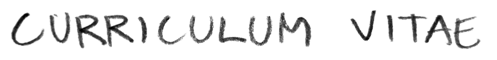
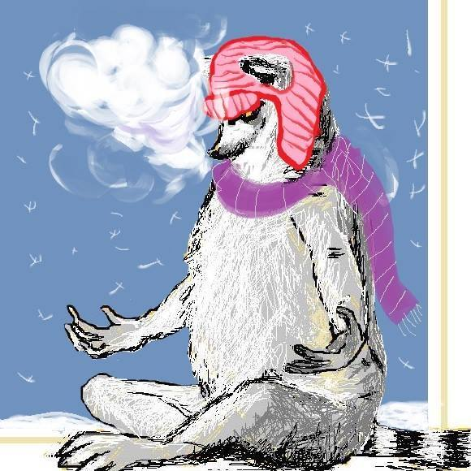
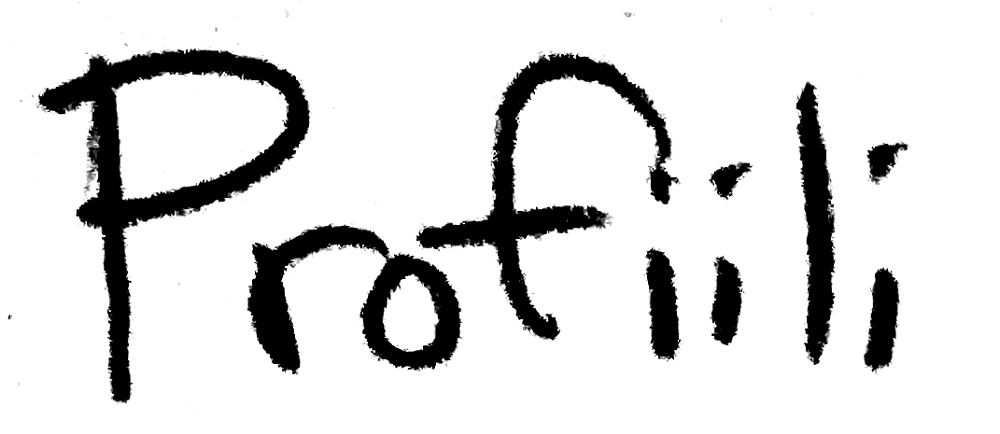
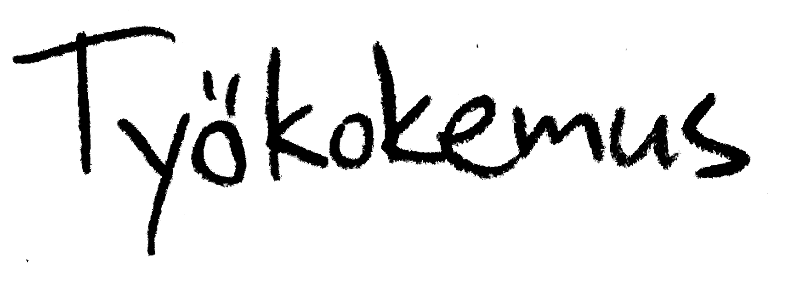
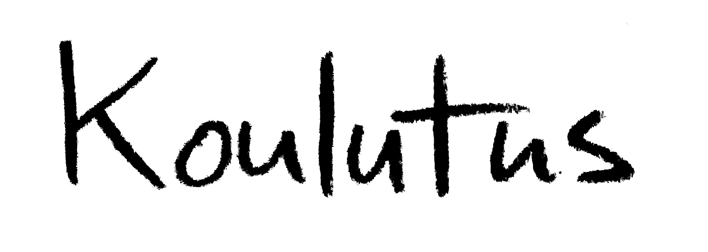
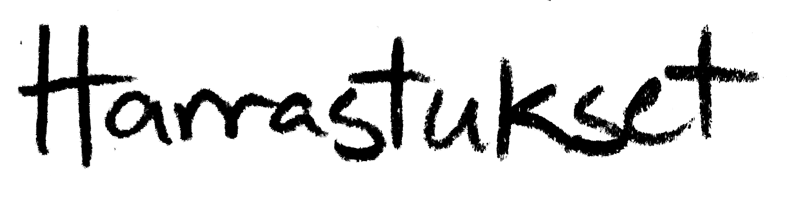
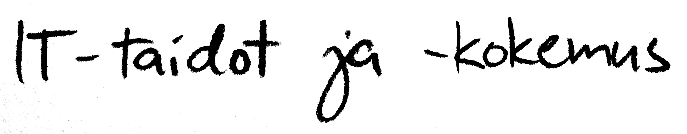

Olen utelias tieteen ja taiteen ystävä Kouvolasta. Kukoistan, kun löydän kaanonin reunalta mielenkiintoisen sivuraiteen, jossa oudot ja hämmentävät asiat asustavat. Olen valmistunut filosofian maisteriksi Jyväskylän yliopistossa syksyllä 2014 kirjallisuus pääaineena ja
työskennellyt kuutisen vuotta Kouvolan yläkouluissa äidinkielen ja kirjallisuuden opettajana.
Matematiikka ja kaikenlaiset pulmat ovat aina olleet intohimoni, ja kiinnostus tietotekniikkaan on kasvanut vähitellen.
Nyt olen opiskellut Helsingin yliopistossa ohjelmointia ja muuta tietojenkäsittelytieteen alaa. Erityisesti eri ohjelmointikielten tekniikoiden hallinta kiehtoo.
Työntekijänä saan paljon aikaan. Taustani takia pystyn puristamaan timantteja aika pienilläkin resursseilla. Muutenkin minimalismi, tietty lofi-estetiikka ja rosoisuus vetävät puoleensa. Tavoitteenani on nyt hankkia kokemusta ohjelmoinnin ja tietotekniikan puolelta ja vähitellen kasvattaa asiantuntemusta alalla.

- Äidinkielen ja kirjallisuuden opettaja
- 2014-2020
- Pääasiassa päätoimisena tuntiopettajana Kouvolan kaupungilla kolmessa eri yläkoulussa
- Siivooja
- 2013-2014
- Liikehuoneistojen ja hotellin viikonloppu- ja pyhäpäiväsiivousta
- Verkkokurssin tutor
- 2010-2011
- Jyväskylän yliopiston kirjallisuushistorian verkkokurssin avustavat työt
- Lyhyet ja sekalaiset
- Palkaton ja vapaaehtoinen harjoittelu Kouvolan pääkirjastossa kesällä 2018
- Opettajan sijaisuudet Kouvolassa ja Jyväskylässä
- Henkilökohtainen avustaja viikonloppuisin Jyväskylässä - kokemusta myös pyörätuolitansseista
- Leiriohjaajan ja liikuntakerhon ohjaajan työt Kouvolassa

- Tietojenkäsittelytieteen perus- ja aineopintoja
- Tutkinto-opiskelijana syksystä 2020, Helsingin avoin yliopisto 2019-2020
- Lisäksi matematiikan ja tilastotieteen sekä taloustieteen opintoja
- Tavoitteena tietotekniikan kandidaatin tutkinto lähivuosina
- Informaatiotutkimuksen ja interaktiivisen median perusopinnot
- Tampereen avoin yliopisto 2019
- Kirjastoalalle vaadittavan opintokokonaisuuden perusopinnot
- Filosofian maisteri
- Jyväskylän yliopisto 2014
- Pääaine kirjallisuus
- Sivuaineet suomen kieli ja opettajaopinnot
- Kursseja myös erityispedagogiikasta, taidehistoriasta ja puheviestinnästä
- Ylioppilas

- Kiipeily
- Astangajooga
- Lenkkeily
- Piirtäminen ja maalaaminen
- Lukeminen ja pelaaminen
- Populaarikulttuurin avoin ja runsas kuluttaminen

- Java
- Python
- Haskell
- SQL
- HTML- ja CSS-perusteet
- Office365
- Linuxin ja terminaalin käytön perusteet
- Windows-ympäristö